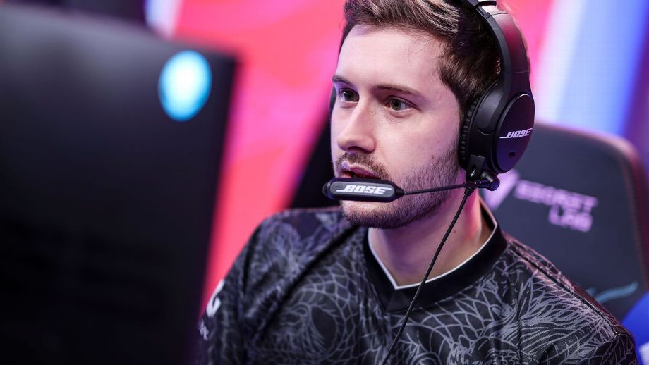
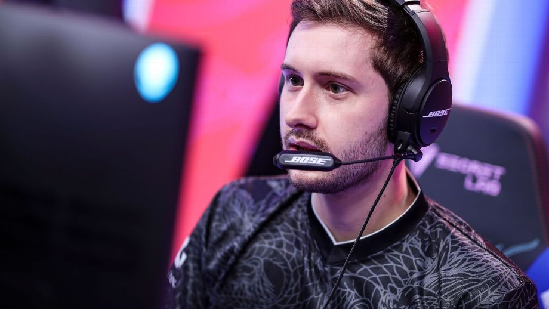

Bjergsen retires from League of Legends, becomes TSM head coach
BY GLORIA BORGER, DECEMBER 2 2021
Veteran TSM mid laner Søren "Bjergsen" Bjerg will retire and move into the head-coach
role for the team ahead of the 2021 season, he announced in a video on Saturday. The decision marks the end of the playing career of one of League of
Legends Championship Series' longest-tenured players. Bjergsen first
joined TSM in late 2013, replacing team founder and owner Andy "Reginald" Dinh in the mid lane. Over the past eight seasons,
he led TSM to win LCS championships and won four MVP awards. "When he told me, I considered retiring alongside him for a week," Doublelift
said. "Soren is one of the best players and people I've ever played with, the shoes will be tough to fill."
One of his favorite aspects of playing was helping the team be on the same page and
become better together,he felt that coaching would be a good fit for him. With Bjergsen as head coach,
TSM will now have to find a replacement for their mid-laner moving into the 2021 season.